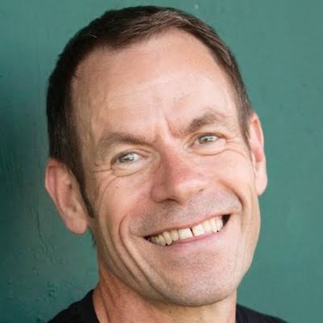
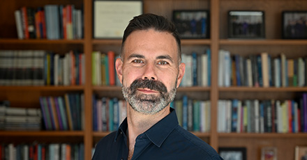
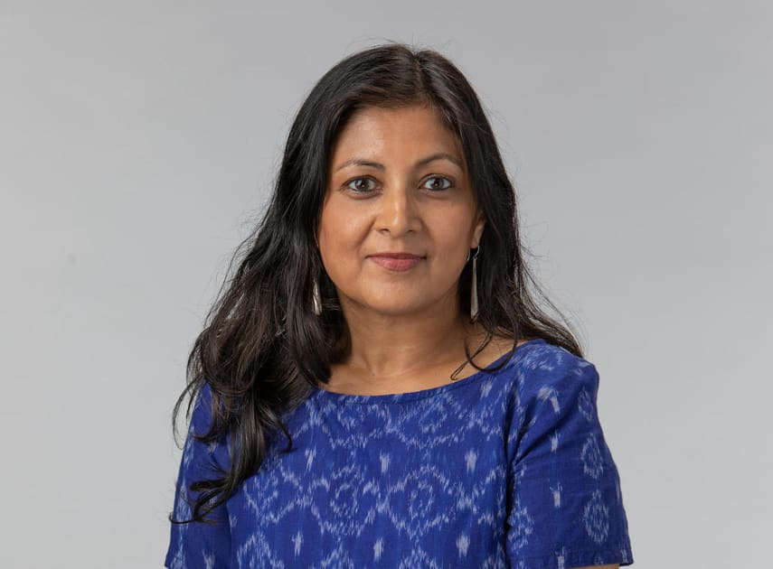
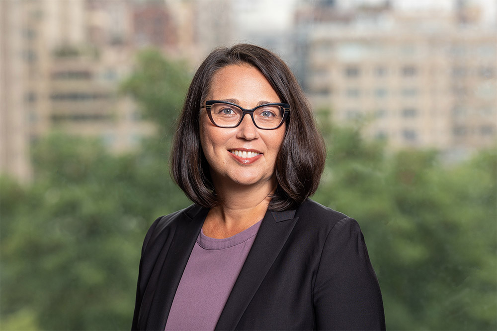
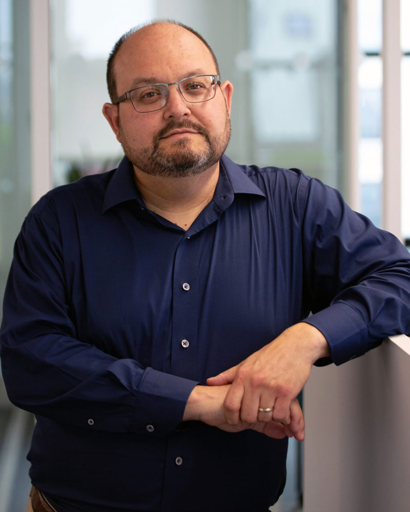
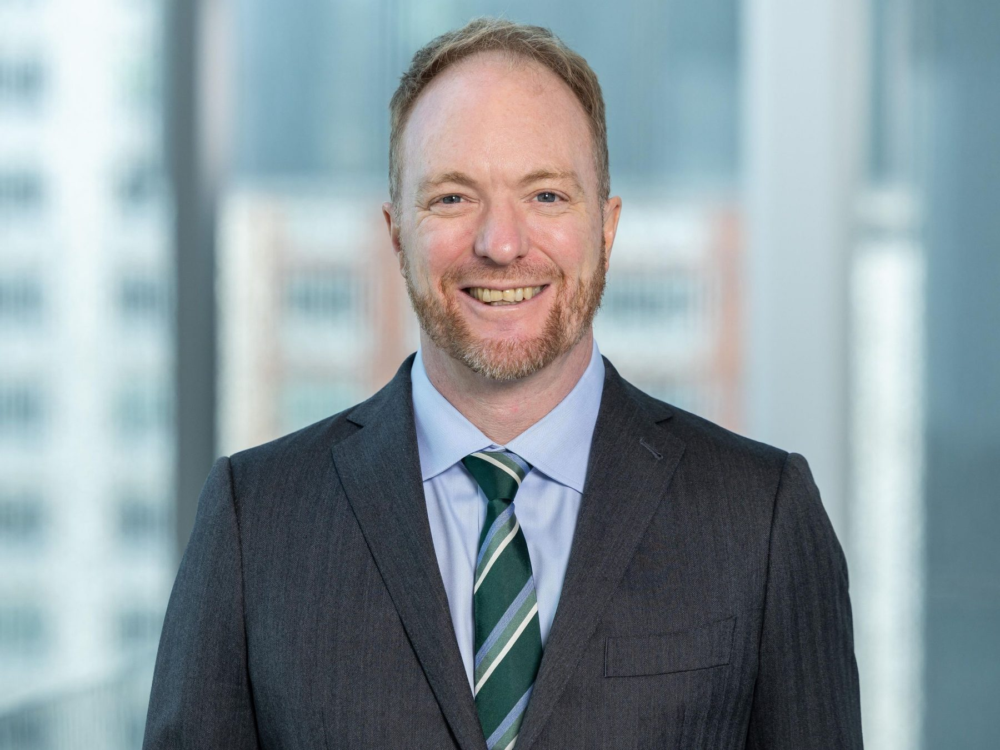
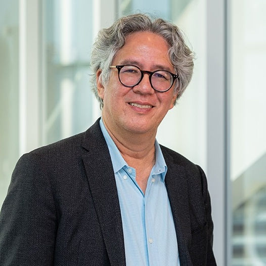

BIOL-UA 800 · New York University · Fall 2026
Seven weeks exploring how science works in society — from funding and publishing to politics, public trust, and the future.
About the Course
Course Materials
Download the introductory slides presented at the first session.
📊Weekly Sessions
Each session runs Wednesday 6:00–7:30 PM and features a 20-minute lecture, 20 minutes of in-class activities, and a 45-minute Q&A with a distinguished guest.







Syllabus
What's Wrong With Science? (BIOL-UA 800) — Fall 2026
September 9 – October 21, 2026 • Wednesdays 6:00–7:30 PM • Cantor Film Center, Room 101
Instructor: David Gresham, Professor of Biology
Office: 12 Waverly Place, Room 405
Office Hours: Tuesdays 4:00–5:30 PM and by appointment (in-person or Zoom)
Email: dgresham@nyu.edu
Science is one of the most powerful forces shaping the modern world. It drives technological innovation, informs public policy, fuels economic growth, and reshapes how we understand life, the planet, the universe, and ourselves. Yet science is increasingly challenged by political polarization, economic pressures, misinformation, and public mistrust.
This engaging 1-credit course explores how science works in society — not just in laboratories and journals, but in governments, markets, media, and everyday life. Through discussions and real-world case studies, students from all disciplines will examine the origins of modern science and confront the social, political, and economic forces that shape the scientific enterprise. The course combines weekly lectures, in-class activities, and Q&A with notable NYU scholars and guests to grapple with the central challenges facing science today and to consider how science can best serve society.
By the end of this course, you will be able to:
To receive a Pass, you must meet all of the following criteria:
You will receive a Fail if you miss more than 1 session, fail to submit a required assignment or the final project, or if your final project receives a Needs Improvement rating and is not revised to a satisfactory level.
Attendance (20%) — This is a short, pass/fail course and being present is essential. To pass the class you must attend at least 6 of the 7 class sessions.
Assignments (60%) — Ongoing engagement through homework assignments: discussion forum posts, video annotations using Annoto, quizzes, reflections, and more.
Final Project (20%) — Explore a specific question or topic and apply key course concepts. Completed individually or in groups of 2–3 students. Presented as a recorded narrated presentation, video, or audio, plus a 1-page individual reflection.
Digital Devices: "Lids Down" policy during lectures. Devices are welcome during polls, data activities, and research tasks.
AI Use: AI tools are permitted as a starting point for brainstorming and copy editing. You must describe your use, acknowledge limitations, and ensure the final work reflects your own critical thinking. Submitting inaccurate AI-generated content will be treated the same as if you wrote it yourself.
Academic Integrity: All students are responsible for complying with NYU's policy on Academic Integrity. Cite all sources.
Accessibility: Students requesting academic accommodations should contact the Moses Center for Student Accessibility (212-998-4980 / nyu.edu/csa).
Session 1: What is science? The history and philosophy of science.
Guest: Michael Strevens (NYU Professor, Philosophy)
Session 2: Who should pay for science? The economics of science funding.
Guest: Nate Williams (The Sloan Foundation)
Session 3: How science is communicated. From science publishing to the popular press.
Guest: Apoorva Mandavilli (Science Journalist, The New York Times)
Session 4: The dark side of science. Eugenics, the atomic bomb, and fomenting doubt.
Guest: Nina Gray (NYU Vice Provost of Research)
Session 5: When should we believe science? The replication crisis, fraud, and retractions.
Guest: Ivan Oransky (NYU Distinguished Journalist in Residence & Co-founder, Retraction Watch)
Session 6: Politics and science: mistrust, misinformation, and polarization.
Guest: Pat Egan (NYU Politics & Director, NYU Berkley Institute for Civil Discourse & Civic Solutions)
Session 7: The future of science. How can we use science to solve large societal problems?
Guest: Michael Purugganan (NYU Dean of the Faculty of Arts and Science & Professor of Biology)
Assignments
Assignments deepen engagement with course materials and serve as a tool for dialogue with classmates and the instructor. They take different forms: discussion posts, video annotations, reflections, and simulations.
Read the proposed funding framework for a new golden age of science and write a critical response. Evaluate its assumptions, priorities, and likely consequences. Due before Session 2.
Trace how a scientific finding moves from a research paper to popular press coverage. Annotate both the original article and a news report covering the same finding, noting what changes, what's lost, and what's gained. Due before Session 3.
Review a research proposal raising ethical concerns and write a response as a member of an Institutional Review Board. Apply the frameworks discussed in class to evaluate risks, benefits, and safeguards. Due before Session 4.
Drawing on the course materials and Session 5 guest discussion, reflect on a case where scientific consensus has been contested or politicized. Analyze the sources of mistrust and consider how they might be addressed. Due before Session 6.
Imagine a headline from 25 years in the future about a scientific development — breakthrough, failure, policy change, or social shift. Create a short recorded presentation, video, or audio piece that tells the story behind the headline and connects it to themes from the course. Completed individually or in groups of 2–3. Submit with a 1-page individual reflection.